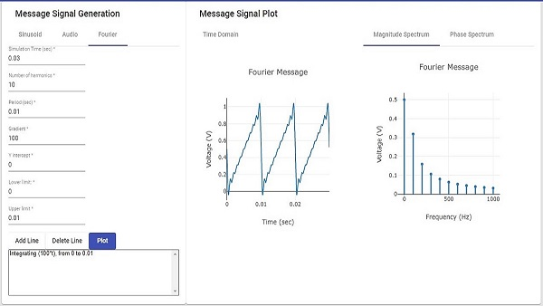
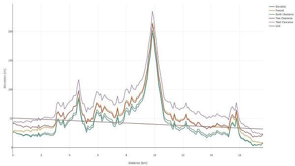

David Akim
I'm a Software Engineer
About
A software engineer with a background in Electrical and Computer Engineering and 2+ years in software development.
Junior Developer
Basic Info:
- Website: https://david-001.github.io/website/
- City: Chaguanas, Trinidad and Tobago
- Degree: MASc. Electrical and Computer Engineering
- Email: davidjohnakim@hotmail.com
- Dev.to: https://dev.to/david001
- Medium: https://medium.com/@davidjohnakim
- Devpost: https://devpost.com/david-001
Code Stats
Resume
Summary
David Akim
A software developer with a background in Electrical and Computer Engineering and 2+ years in software development
- Chaguanas, Trinidad and Tobago
- davidjohnakim@hotmail.com
Education
MASc, Electrical and Computer Engineering
2013 - 2016
The University of the West Indies, St Augustine
Grade: Distinction
BSc, Electrical and Computer Engineering
2007 - 2011
The University of the West Indies, St Augustine
GPA: 3.34
Professional Experience
Software Engineer
2025 - Present
BluPelagos
- Developed and executed test plans and validation strategies for embedded systems, ensuring alignment with functional and performance requirements.
- Documented test results, generated detailed validation reports, and provided feedback for design improvements to enhance product quality and reliability.
Development Engineer II
2019 - 2022
The University of the West Indies, St Augustine
- Developed unique Angular front-end apps for teaching telecommunication to students resulting in improved performances. These apps were stylized using Angular material. Plots were done using Plotly.js. Routing data was obtained from OSRM API (Open Source Routing Machine). The 3D globe was done using CesiumJS. All apps were built using Visual Studio Code editor.
- Used map data from OpenStreetMap and obtained elevation data by converting C++ source code from SPLAT! (RF Signal Propagation, Loss, And Terrain analysis tool) to Angular resulting in lowering production costs by at least $100 per year.
- Researched and analyzed cost and complexity of similar telecommunication teaching tools.
- Delivered an online workshop on the M.E.A.N. stack (MongoDB, ExpressJS, Angular, and NodeJS). Topics included creating Angular components, model, and service, building server-side application using NodeJS, handling different HTTP demands using ExpressJS, and translating objects in code to objects in MongoDB using Mongoose.
- Delivered the undergraduate telecommunication course with a 100% pass rate on first attempt.
Full time Demonstrator
2018 -2019
The University of the West Indies, St Augustine
- Assisted lecturers in planning and preparation of teaching activities including coursework assignments, laboratory exercises and grading.
Instructor
2014 -2016
The University of the West Indies, St Augustine
- Assisted lecturers in the planning and execution of teaching activities including coursework assignments, laboratory exercises, grading and coordinating with staff from other departments.
- Led student support staff in telecommunication laboratory activities.
Software Development Engineer
2013 -2014
Ixanos Ltd
- Developed a customer feedback Android (Java) app for a telecommunication company, which allowed users to report call quality, including geolocation and cellular signal strength data.
- Collaborated with a team of engineers to win a government innovation grant of $300,000 (TT).
- Used MSSQL to perform generator load forecasting.
- Developed an SMS and email alert messaging system in C#.
Part time Demonstrator
2011 -2013
The University of the West Indies, St Augustine
- Helped over 100 students with programming in C++ and VHDL.
Portfolio
A collection of my projects
- All
- Python
- Angular
- Mixed Stack
Communication Engineering Tool
This is an online tool developed to help students understand the
fundamentals of communication systems engineering.

Angular
Plotly.js
LOS Microwave Tool
This is an online tool developed to help students understand the
fundamentals of line of sight microwave network planning.

Angular
Plotly.js
Blogs
A collection of my blogs